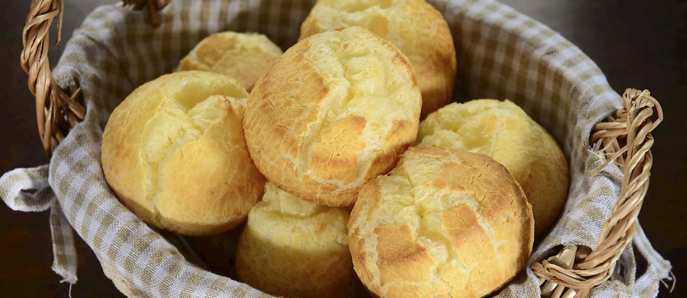

Pao de Queijo

Description
Literally translated to cheese bread, pão de queijo has its origins in the culinary inventions of African slaves,
when they started to use the residue of the cassava plant. A fine white powder, or starch, was rolled into balls
and baked.
At the time, no cheese was added, so it was just baked starch, but at the end of the 19th century, when slavery
ended, other foods started to become available to the Afro-Brazilians for the first time. In the state of Minas
Gerais, the dairy center of Brazil, cheese and milk started to be added to the starchy balls, and pão de queijo
was created.
Today, it is a popular Brazilian snack or breakfast food that is also widely consumed in northern Argentina, sold
at numerous coffee shops, snack bars, and bakeries.
Ingredients
- Tapioca Flour
- Queso Fresco
- Milk
- Eggs
- Vegetable Oil
- Salt
Steps
- Heat the oven: Arrange 2 racks to divide the oven into thirds and heat to 450°F. Line 2 baking sheets with
parchment paper or silicone baking mats.
- Boil the milk and oil: Place the milk, oil, and salt in a medium saucepan and bring to a gentle boil over
medium heat, stirring occasionally. Remove from heat as soon as you see big bubbles coming through the milk.
- Add the tapioca flour: Add all of the tapioca flour and stir with a wooden spoon until you see no more dry
tapioca flour. The dough will be grainy and gelatinous at this point.
- Cool the dough: Transfer the dough to the bowl of a standing mixer fitted with a paddle attachment.
(Alternatively, you can finish the dough by hand. Be prepared for a work-out.) Beat the dough for a few
minutes at medium speed until it smooths out and has cooled enough that you can hold your finger against the
dough for several seconds. There may be an oily slick that is not fully incorporated.
- Beat in the eggs: With the mixer on medium speed, beat the eggs into the dough one at a time, waiting until
the first egg is fully incorporated before adding the second. Scrape down the sides of the bowl as needed.
- Portion the puffs: Have a small bowl of water ready. For small puffs, scoop the dough by level tablespoons
onto the baking sheets, spacing them about 1 1/2-inches apart (24 per baking sheet). For larger puffs, scoop
the dough with a small (1 ounce or 2 tablespoon) ice cream scoop, spacing them about 2-inches apart (12 per
baking sheet). Dip your scoop in water between scoops to prevent sticking.
- Bake the puffs: Place the baking sheets in the oven and immediately reduce the heat to 350°F. Bake for 15
minutes. Rotate the baking sheets between racks and from front to back. Bake until the puffs have puffed,
the outsides are dry, and they are just starting to turn golden-brown on the bottoms, 10 to 15 minutes more.
(The tops will not brown much.) Cool for a few minutes and eat warm.
Home